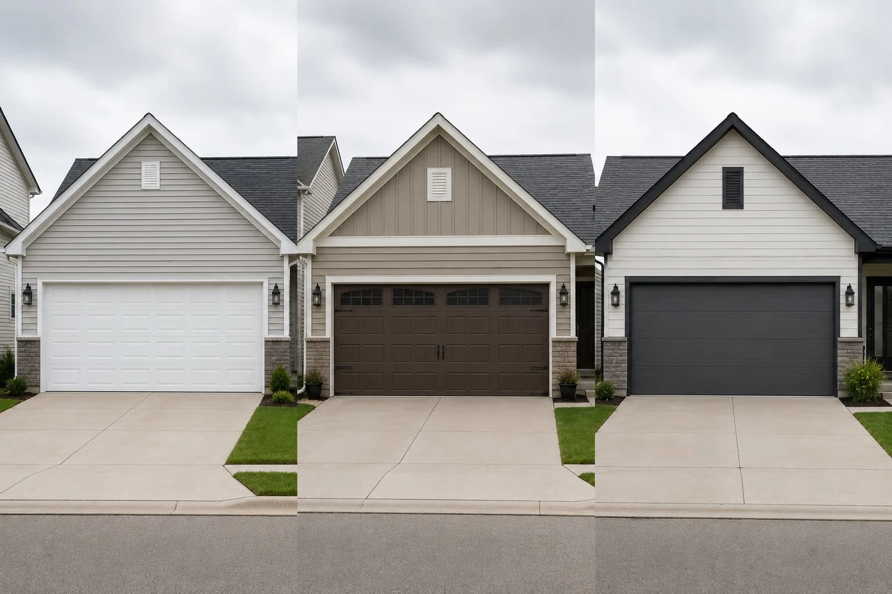

Garage door installation for Columbus homes
Whether you're adding a garage door to new construction, replacing an aging door that's past its useful life, or upgrading for curb appeal and energy efficiency, we handle the full installation — framing measurement, door and hardware selection, installation, opener setup, and final balancing and safety check.
We serve Columbus and all surrounding Franklin County suburbs. Most full door installations are completed in a single day.
Considering an insulated door for energy efficiency? We install those too. See our brand comparison and installation cost guide before you decide.

Choosing the right door for a Columbus home
Columbus's climate — hot summers, cold winters, and substantial temperature swings — makes insulation an important consideration for any new door on an attached garage. A double or triple-layer insulated steel door keeps the garage significantly warmer in January and reduces HVAC load in summer for rooms above or adjacent to the garage. For a full breakdown of R-values and material options, see our garage door insulation guide.
For homes where the garage is detached or the garage space doesn't need temperature management, a single-layer steel door is perfectly adequate and more cost-effective.
Door styles we install
- Raised-panel steel — the standard Columbus residential door, durable, low-maintenance, wide color range. If only a section is damaged, garage door panel replacement is often more cost-effective than a full door swap.
- Carriage-house style — traditional look with modern construction, popular in Dublin and Upper Arlington
- Contemporary flush panel — clean lines, works well with newer construction in Lewis Center and New Albany
- Full-view aluminum — glass and aluminum frame for modern homes, premium option
- Wood-look composite — the warmth of wood without the maintenance, common in higher-end suburbs
What's included in our installation
- Opening measurement and framing assessment
- Door panel installation with proper hardware — hinges, rollers, and bottom seal
- Track and spring system installation and balancing
- Opener installation and programming (if included)
- Safety reversal and auto-stop testing
- Remote and keypad programming
- Final balance check and full cycle test
"New construction installs in Lewis Center and Powell have been keeping us busy — a lot of the subdivision builds in Delaware County are spec homes where the builder installs the cheapest possible single-layer door. Homeowners moving in often want an upgrade within the first year. Swapping to an insulated door with a belt-drive opener makes a noticeable difference in how that space feels, especially in the winter."
Installation questions
How much does new installation cost?
A standard double-car insulated steel door with installation runs $900–$1,600. Add $250–$450 for a new belt-drive opener. Written quote before work starts.
How long does installation take?
Most residential door installations are completed in 3–5 hours. New construction with no existing hardware is slightly faster; replacement installations vary based on what needs removal.
Do you haul away the old door?
Yes. Old door panels and hardware removal and disposal is included in our replacement installations. You don't need to arrange separate disposal.
Do I need a permit?
In most Columbus and Franklin County jurisdictions, replacing an existing garage door in the same opening doesn't require a permit. New construction openings may require one. We'll let you know if a permit is needed for your specific situation.